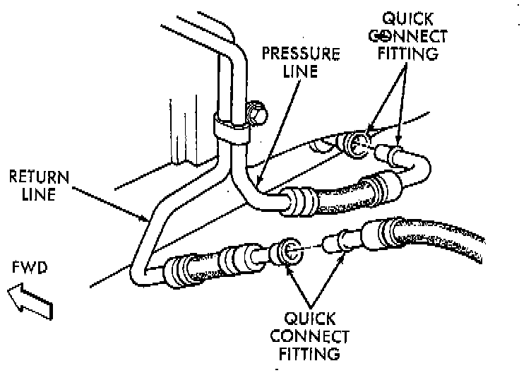

Fluid Line/Hose: Service and Repair

NOTE: The transmission cooler lines are attached with quick connect fittings. The cooler lines and fittings are NOT serviceable. Damaged fittings or cooler lines are to be replaced as assemblies.
REMOVAL
1. If fitting and cooler line are covered with dirt, mud, or grease, clean fitting and cooler line with MOPAR spray type carburetor or brake cleaner.
2. Disengage retainer on fitting and pull cooler line out of fitting.
3. Cover open ends of cooler lines and fittings to prevent dirt entry.
4. Inspect condition of fitting. Replace transmission fitting as an assembly if fitting body or retainer clip is damaged.
INSTALLATION
1. If transmission or radiator fittings require replacement, apply MOPAR Lock N' Seal, or equivalent, to fitting threads before installation.
2. Wipe off cooler line and fitting with clean, dry cloth.
3. Insert cooler line into fitting. Then push line inward until retainer secures line. A snap or click will be heard and felt through the line when the retainer seats behind the cooler line flange.
4. Pull outward on cooler lines to verify that they are properly secured.